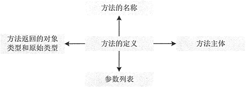

Java成员方法的声明和调用
声明成员方法可以定义类的行为，行为表示一个对象能够做的事情或者能够从一个对象取得的信息。类的各种功能操作都是用方法来实现的，属性只不过提供了相应的数据。一个完整的方法通常包括方法名称、方法主体、方法参数和方法返回值类型，其结构如图 1 所示。
成员方法一旦被定义，便可以在程序中多次调用，提高了编程效率。声明成员方法的语法格式如下：
上述代码中一个方法包含 4 部分：方法的返回值、方法名称、方法的参数和方法体。其中 retum_type 是方法返回值的数据类型，数据类型可以是原始的数据类型，即常用的 8 种数据类型，也可以是一个引用数据类型，如一个类、接口和数组等。
除了这些，一个方法还可以没有返回值，即返回类型为 void，像 main() 方法。method_name 表示自定义的方法名称，方法的名称首先要遵循标识符的命名约定，除此之外，方法的名称第一个单词的第一个字母是小写，第二单词的第一个字母是大写，依此类推。
paramList 表示参数列表，这些变量都要有自己的数据类型，可以是原始数据类型，也可以是复杂数据类型，一个方法主要依靠参数来传递消息。方法主体是方法中执行功能操作的语句。其他各修饰符的含义如下。
在调用成员方法时应注意以下 4 点：
在方法体内定义变量时，变量前不能加修饰符。局部变量在使用前必须明确赋值，否则编译时会出错。另外，在一个方法内部，可以在复合语句（把多个语句用括号

图 1 方法组成元素
图 1 方法组成元素
成员方法一旦被定义，便可以在程序中多次调用，提高了编程效率。声明成员方法的语法格式如下：
public class Test {
[public|private|protected][static]<void|return_type><method_name>([paramList]) {
// 方法体
}
}
注意：上述语法中，中括号“[]”中的部分表示可以省略，竖线“|”表示“或”，例如 public|private，说明可以使用 public 或 private 关键字，但是两个关键字不能同时出现。上述代码中一个方法包含 4 部分：方法的返回值、方法名称、方法的参数和方法体。其中 retum_type 是方法返回值的数据类型，数据类型可以是原始的数据类型，即常用的 8 种数据类型，也可以是一个引用数据类型，如一个类、接口和数组等。
除了这些，一个方法还可以没有返回值，即返回类型为 void，像 main() 方法。method_name 表示自定义的方法名称，方法的名称首先要遵循标识符的命名约定，除此之外，方法的名称第一个单词的第一个字母是小写，第二单词的第一个字母是大写，依此类推。
paramList 表示参数列表，这些变量都要有自己的数据类型，可以是原始数据类型，也可以是复杂数据类型，一个方法主要依靠参数来传递消息。方法主体是方法中执行功能操作的语句。其他各修饰符的含义如下。
- public、private、protected：表示成员方法的访问权限。
- static：表示限定该成员方法为静态方法。
- final：表示限定该成员方法不能被重写或重载。
- abstract：表示限定该成员方法为抽象方法。抽象方法不提供具体的实现，并且所属类型必须为抽象类。
注意：上面所提到的重写、重载和抽象类，由于篇幅有限，我们会在教程《Java方法重载》《Java方法重写》和《Java抽象类》中讲解，这里大致了解就可以。
例 1
为上一节创建的学生类 Student 添加一个可以返回学生信息字符串的方法。代码如下：
public class Student {
public StringBuffer printInfo(Student st) {
StringBuffer sb = new StringBuffer();
sb.append("学生姓名："+st.Name+"\n 学生年龄："+st.Age+"\n 学生性别："+st.isSex());
return sb;
}
}
上述代码创建了一个名称为 printInfo 的方法，其返回值类型为 StringBuffer（引用数据类型）。该方法需要传递一个 Student 类型的参数，最后需要将一个 StringBuffer 类型的数据返回。1. 成员方法的返回值
若方法有返回值，则在方法体中用 return 语句指明要返回的值，其格式如下所示。return 表达式或者
return (表达式)其中，表达式可以是常量、变量、对象等。表达式的数据类型必须与声明成员方法时给出的返回值类型一致。
2. 形参、实参及成员方法的调用
一般来说，可以通过以下方式来调用成员方法：
methodName({paramList})
关于方法的参数，经常会提到形参与实参，形参是定义方法时参数列表中出现的参数，实参是调用方法时为方法传递的参数。
例 2
下面 retumMin() 方法中的 m 和 n 是形参，调用 retumMin() 方法时的 x 和 y 是实参。
public int returnMin(int m,int n) {
return Math.min(m,n); // m和n是形参
}
public static void main(String[] args) {
int x = 50;
int y = 100;
Test t = new Test();
int i = t.returnMin(x,y); // x和y是实参
System.out.println(i);
}
方法的形参和实参具有以下特点：- 形参变量只有在被调用时才分配内存单元，在调用结束时，即刻释放所分配的内存单元。因此，形参只有在方法内部有效，方法调用结束返回主调方法后则不能再使用该形参变量。
- 实参可以是常量、变量、表达式、方法等，无论实参是何种类型的量，在进行方法调用时，它们都必须具有确定的值，以便把这些值传送给形参。因此应预先用赋值、输入等办法使实参获得确定值。
- 实参和形参在数量、类型和顺序上应严格一致，否则会发生“类型不匹配” 的错误。
- 方法调用中发生的数据传送是单向的，即只能把实参的值传送绐形参，而不能把形参的值反向地传送给实参。因此在方法调用过程中，形参的值发生改变，而实参中的值不会变化。
例 3
下面的示例演示了调用 add() 方法前后形参 x 的变化。
public int add(int x) {
x += 30;
System.out.println("形参 x 的值："+x);
return x;
}
public static void main(String[] args) {
int x = 150;
System.out.println("调用 add() 方法之前 x 的值："+x);
Test t = new Test();
int i = t.add(x);
System.out.println("实参 x 的值："+x);
System.out.println("调用 add() 方法的返回值："+i);
}
运行上述程序，输出结果如下：
调用 add() 方法之前 x 的值：150 形参 x 的值：180 实参 x 的值：150 调用 add() 方法的返回值：180从输出结果可以看出，形参 x 值的改变，并没有影响实参 x。
在调用成员方法时应注意以下 4 点：
- 对无参成员方法来说，是没有实际参数列表的（即没有 paramList），但方法名后的括号不能省略。
- 对带参数的成员方法来说，实参的个数、顺序以及它们的数据类型必须与形式参数的个数、顺序以及它们的数据类型保持一致，各个实参间用逗号分隔。实参名与形参名可以相同，也可以不同。
- 实参也可以是表达式，此时一定要注意使表达式的数据类型与形参的数据类型相同，或者使表达式的类型按 Java 类型转换规则达到形参指明的数据类型。
- 实参变量对形参变量的数据传递是“值传递”，即只能由实参传递给形参，而不能由形参传递给实参。程序中执行到调用成员方法时，Java 把实参值复制到一个临时的存储区（栈）中，形参的任何修改都在栈中进行，当退出该成员方法时，Java 自动清除栈中的内容。
3. 方法体中的局部变量
在方法体内可以定义本方法所使用的变量，这种变量是局部变量。它的生存期与作用域是在本方法内，也就是说，局部变量只能在本方法内有效或可见，离开本方法则这些变量将被自动释放。在方法体内定义变量时，变量前不能加修饰符。局部变量在使用前必须明确赋值，否则编译时会出错。另外，在一个方法内部，可以在复合语句（把多个语句用括号
{}括起来组成的一个语句称复合语句）中定义变量，这些变量只在复合语句中有效。关注公众号「站长严长生」，在手机上阅读所有教程，随时随地都能学习。内含一款搜索神器，免费下载全网书籍和视频。

微信扫码关注公众号